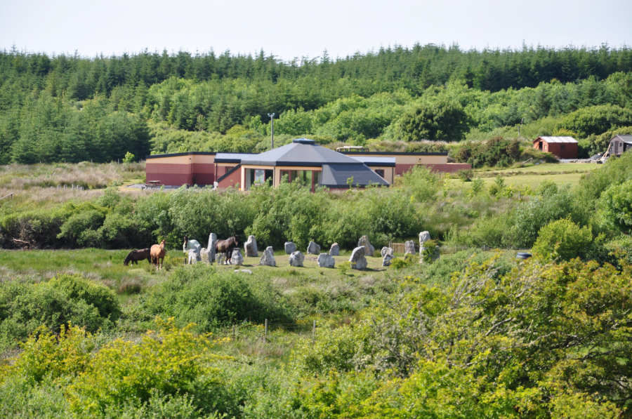

There is plenty camping available all over the Burren but it does get crowded. There is limited space available in the field on the sea side of the road just down from Ballyryan for parking vans and camping. There are no faciities here. it is basically wild camping so we are counting on the goodwill of the landowners to allow us to camp here overnight. This can be quite busy if there is fine weather as there are a lot of people who use the area for fishing trips also. Please be respectful of others and ensure you take all your rubbish away with you if you do decide to camp here.
For those of you who would prefer to camp in a quieter area where there are facilities The Boghill Centre also has camping space or if you want to book somewhere more luxurious they also have very comfortable rooms at a reasonable rate.There is also a campsite in Doolin and Fanore which are villages on either side of the climbing area so take your pic. Fanore also has a nice beach with sand dunes that is popular with campers.
 The Boghill Centre
Whatever you decide please ensure you respect the locals and the area. A climbing festival is a relatively new concept in Ireland and we would like to ensure we can have many more to come.